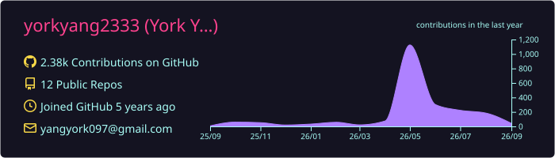
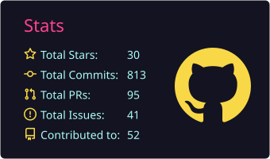
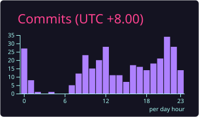
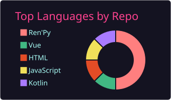
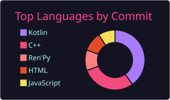

03
THE DAILY RECORD
The record, refreshed
A live reading of public activity from GitHub. The numbers are useful context, never the whole story.
PUBLIC RECORD
Reading the public record...
Live from GitHub
Public repositories—
Followers—
Total stars—
Total forks—
What moved lately
- Reading the public record...
The last generated record
These charts remain available when the public API is rate-limited or offline.





Recently updated repositories
The latest public repositories returned by GitHub, ordered by update time.
Reading the public record...